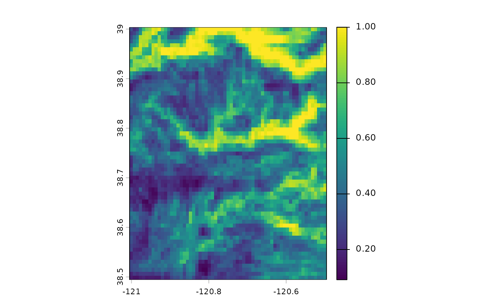
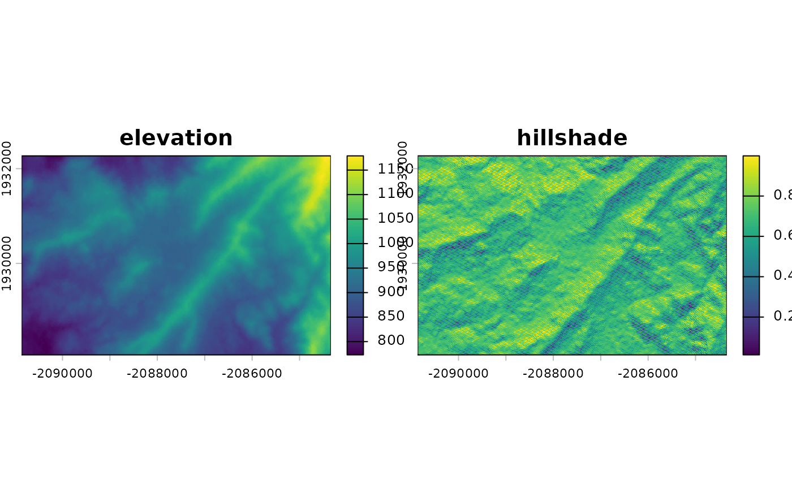
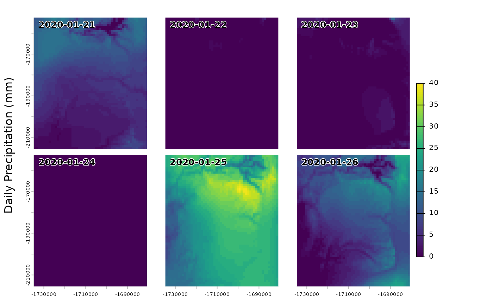

This vignette shows how to extract a Google Earth Engine asset by name for an arbitrary extent and visualize it in R.
First, we load {rgeedim}.
## rgeedim v0.4.0 -- using geedim 2.0.0 w/ earthengine-api 1.7.10If you have the necessary Python dependencies installed (geedim, earthengine-api), you will see the versions printed out when the package is loaded.
If this is your first time using any Google Earth Engine tools,
authenticate with gd_authenticate().
You can pass arguments to use several different authorization
methods. Perhaps the easiest to use is auth_mode="notebook"
in that does not rely on an existing
GOOGLE_APPLICATION_CREDENTIALS file nor an installation of
the gcloud CLI tools. However, the other options are better
for non-interactive use.
gd_authenticate(auth_mode = "notebook")You only need to authenticate periodically, depending on the method you used.
In each session we need to call gd_initialize(). This is
a wrapper function around geedim.Initialize() that must be
run before using the Python Google Earth Engine API.
project_id <- Sys.getenv("GOOGLE_CLOUD_QUOTA_PROJECT", "rgeedim-demo")
gd_initialize(project = project_id)## Using Application Default Credentials (ADC)Note that with default auth_mode="gcloud" you need to
specify the project via project= argument, in your default
configuration file or via system environment variable
GOOGLE_CLOUD_QUOTA_PROJECT. The authorization tokens
generated for auth_mode="notebook" are always associated
with a specific project.
Perhaps the simplest way to specify the target extent is
using the xmin/xmax/ymin/ymax arguments to gd_bbox(). This
function returns a Python object equivalent to GeoJSON, which
is interchangeably represented as a simple list object in
R using {reticulate}.
Determine Target Region
r <- gd_bbox(
xmin = -121,
xmax = -120.5,
ymin = 38.5,
ymax = 39
)As is standard for GeoJSON, coordinates of the bounding box
are expressed in WGS84 decimal degrees ("OGC:CRS84"). Note
that longitude, latitude (X, Y) coordinate pair order is implied.
Access Images by ID
We can find IDs of assets of interest using the Google Earth Engine data catalog: https://developers.google.com/earth-engine/datasets/catalog
To obtain an R object reference to the asset we pass the
"id" to gd_image_from_id(). For example here
we use Global
SRTM Topographic Diversity:
Download SRTM Topographic Diversity product
x <- gd_image_from_id('CSP/ERGo/1_0/Global/SRTM_topoDiversity')gd_image_from_id() will return
geedim.mask.MaskedImage and
gd_collection_from_name() will return
geedim.collection.MaskedCollection objects.
Now we pass the image result to gd_download(). We can
specify output filename and target area as
region arguments. See gd_bbox() for examples
of making a region argument from bounding coordinates or a {terra}
SpatExtent object.
Other options that can be passed to the
BaseImage.download() method include scale
which allows warping of the result to a target resolution. Try modifying
this example to use scale=90 (~native SRTM resolution):
img <- gd_download(x, filename = 'image.tif',
region = r, scale = 900,
overwrite = TRUE, silent = FALSE
)gd_download() (invisibly) returns the
filename on successful download, which helps to “pipe” into
functions that might read the result.
So we can use the {terra} rast() function to read the
GeoTIFF gd_download() result.
## terra 1.8.97
f <- rast(img)
# inspect object
f## class : SpatRaster
## size : 63, 63, 1 (nrow, ncol, nlyr)
## resolution : 0.008084838, 0.008084838 (x, y)
## extent : -121.005, -120.4956, 38.49434, 39.00368 (xmin, xmax, ymin, ymax)
## coord. ref. : lon/lat WGS 84 (EPSG:4326)
## source : image.tif
## name : constantCreate a local Hillshade from DEM
This example demonstrates the download of a section of the USGS NED seamless 10m grid. This DEM is processed locally with {terra} to calculate some terrain derivatives (slope, aspect) and a hillshade.
library(rgeedim)
library(terra)
project_id <- Sys.getenv("GOOGLE_CLOUD_QUOTA_PROJECT", "rgeedim-demo")
gd_initialize(project = project_id)## Using Application Default Credentials (ADC)
b <- gd_bbox(
xmin = -120.296,
xmax = -120.227,
ymin = 37.9824,
ymax = 38.0071
)
## hillshade example
# download 10m NED DEM in AEA
x <- "USGS/SRTMGL1_003" |>
gd_image_from_id() |>
gd_download(
region = b,
scale = 10,
crs = "EPSG:5070",
resampling = "bilinear",
filename = "image.tif",
bands = list("elevation"),
overwrite = TRUE,
silent = FALSE
)
dem <- rast(x)$elevation
# calculate slope, aspect, and hillshade with terra
slp <- terrain(dem, "slope", unit = "radians")
asp <- terrain(dem, "aspect", unit = "radians")
hsd <- shade(slp, asp)
# compare elevation v.s. hillshade
plot(c(dem, hillshade = hsd))
Subsets of the "USGS/SRTMGL1_003" image result in
multi-band GeoTIFF with "elevation" and
"FILL_MASK" bands. In the contiguous US we know the DEM is
continuous so the FILL_MASK is not that useful. With geedim
>1.7 we retrieve only the "elevation" band by specifying
argument bands = list("elevation"). This cuts the raw image
size that we need to download in half.
Working with Image Collections
Many Google Earth Engine assets of interest are “collections.” These assets contain data for several bands, dates, processes, resolutions, etc. There are standard ways that these collections can be aggregated; also, custom processing can be achieved through the Earth Engine API or by downloading data to your computer and working offline.
Filters on date and data quality are possible with
gd_search(); many processes on collections cannot proceed
without first “searching” it. We can quickly inspect search results with
gd_properties()
A key step in many processes involving image collections is the use
of gd_composite() to re-sample (or otherwise “combine”)
component images of interest from the collection into a single layer.
These operations are often performed on the server-side prior to
download. A composite image can also be made automatically through
gd_download() (which defaults to
composite=TRUE). Setting composite=FALSE will
allow individual images to be downloaded as separate GeoTIFF without
aggregation to a single layer.
Composite LiDAR DEM
This example demonstrates how to access 1-meter LiDAR data from the
USGS 3D Elevation Program (3DEP). LiDAR data are not available
everywhere, and are generally available as collections of tiles for
specific dates. We will use gd_search() to narrow down the
options.
# search and download composite from USGS 1m lidar data collection
library(rgeedim)
library(terra)
project_id <- Sys.getenv("GOOGLE_CLOUD_QUOTA_PROJECT", "rgeedim-demo")
gd_initialize(project = project_id)## Using Application Default Credentials (ADC)
# wkt->SpatVector->GeoJSON
b <- 'POLYGON((-121.355 37.56,-121.355 37.555,
-121.35 37.555,-121.35 37.56,
-121.355 37.56))' |>
vect(crs = "OGC:CRS84")
# create a GeoJSON-like list from a SpatVector object
# (most rgeedim functions arguments for spatial inputs do this automatically)
r <- gd_region(b)
# search collection for an area of interest
a <- "USGS/3DEP/1m" |>
gd_collection_from_name() |>
gd_search(region = r)
# inspect individual image metadata in the collection
gd_properties(a)## id
## 1 USGS/3DEP/1m/USGS_1M_10_x64y416_CA_SanJoaquin_2021_A21
## 2 USGS/3DEP/1m/USGS_1M_10_x64y416_CA_UpperSouthAmerican_Eldorado_2019_B19
## date
## 1 2006-01-01
## 2 2006-01-01
# resampling images as part of composite; before download
x <- a |>
gd_composite(resampling = "bilinear") |>
gd_download(region = r,
crs = "EPSG:5070",
scale = 1,
filename = "image.tif",
overwrite = TRUE,
silent = FALSE) |>
rast()
# inspect
plot(terra::terrain(x$elevation))
plot(project(b, x), add = TRUE)
The small sample extent covers only one tile, but in larger examples LiDAR data sources co-occur or span larger extents with variable coverage.
Downloading individual images in a collection
This example downloads each component image of the DAYMET climate collection “daily precipitation” layers into a temporary folder as separate GeoTIFFs. These individual images can be further aggregated or processed outside of Google Earth Engine.
# search and download individual images from daymet V4
library(rgeedim)
library(terra)
project_id <- Sys.getenv("GOOGLE_CLOUD_QUOTA_PROJECT", "rgeedim-demo")
gd_initialize(project = project_id)## Using Application Default Credentials (ADC)
r <- gd_bbox(
xmin = -121,
xmax = -120.5,
ymin = 38.5,
ymax = 39
)
# search collection for spatial and date range (one week in January 2020)
res <- gd_collection_from_name('NASA/ORNL/DAYMET_V4') |>
gd_search(region = r,
start_date = "2020-01-21",
end_date = "2020-01-27")
# get table of IDs and dates
p <- gd_properties(res)
p## id date
## 1 NASA/ORNL/DAYMET_V4/20200121 2020-01-21
## 2 NASA/ORNL/DAYMET_V4/20200122 2020-01-22
## 3 NASA/ORNL/DAYMET_V4/20200123 2020-01-23
## 4 NASA/ORNL/DAYMET_V4/20200124 2020-01-24
## 5 NASA/ORNL/DAYMET_V4/20200125 2020-01-25
## 6 NASA/ORNL/DAYMET_V4/20200126 2020-01-26
td <- tempdir()
# download each image as separate GeoTIFF (no compositing)
# Note: `filename` is a directory
res2 <- res |>
gd_download(
filename = td,
composite = FALSE,
dtype = 'int16',
region = r,
bands = list("prcp"),
crs = "EPSG:5070",
scale = 1000
)
x2 <- rast(res2)
# filter to bands of interest (if needed)
x2 <- x2[[names(x2) == "prcp"]]
# set time for each layer
time(x2) <- p$date
panel(x2)
title(ylab = "Daily Precipitation (mm)")